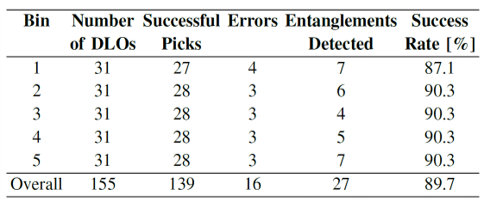

Industrial assembly of deformable linear objects (DLOs) such as cables offers great potential for many industries. However, DLOs pose several challenges for robot-based automation due to the inherent complexity of deformation and, consequentially, the difficulties in anticipating the behavior of DLOs in dynamic situations. Although existing studies have addressed isolated subproblems like shape tracking, grasping, and shape control, there has been limited exploration of integrated workflows that combine these individual processes. To address this gap, we propose an object-centric perception and planning framework to achieve a comprehensive DLO assembly process throughout the industrial value chain. The framework utilizes visual and tactile information to track the DLO's shape as well as contact state across different stages, which facilitates effective planning of robot actions. Our approach encompasses robot-based bin picking of DLOs from cluttered environments, followed by a coordinated handover to two additional robots that mount the DLOs onto designated fixtures. Real-world experiments employing a setup with multiple robots demonstrate the effectiveness of the approach and its relevance to industrial scenarios
Bin picking is performed on a densely packed set of DLOs, which requires instance segmentation and handling of possible entanglements.
The captured image is segmented by the foundation model SAM2[1]. to obtain the shape of the DLOs on the top layer, and then select an appropriate grasping point.
To handle possible entanglements, the motion is planned based on the contact status from force/torque sensor. A state-machine approach is deployed to detect grasping errors and react to them accordingly.
The bin-picking experiment involves removing 31 high-voltage cables from a load carrier. The system demonstrates its reliability with an average success rate of 89.7%.
Successful: the DLO is isolated from the pile and placed on the table.
To monitor DLO’s 3D shape during the handover stage, the global shape estimated from RGB-D camera views are corrected by the grasping position obtained from ViTac sensing as well as proprioceptive information. The resulting 3D shape is later used to plan the grasping motion.
We compare the reconstructed shape with and without local correction. Across 10 trials, each consisting of 40 frames, the average adjustment from local correction with ViTac and proprioceptive information is 2.34 cm.
We run handover experiments for 32 trials across 4 different configurations, and record the gap between the resulting grasping point and the robot’s TCP.
| Grasping distance | Ours | Vision only |
| Lg = 8 cm | ||
| Lg = 12 cm | ||
| Lg = 15 cm |
Local correction reduces the average grasping gap by 1.54 cm, and remarkably increases the handover success rate from 6.5% to 81.25%.
Finally, we validate our framework within a real-world, comprehensive assembly process, where multiple robots collaboratively pick a target DLO, transport it to the mounting workspace and mount it on fixtures.
|
|